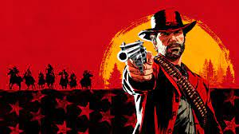

.jpeg)
God of War Ragnarök é um jogo eletrônico de ação-aventura desenvolvido pela Santa Monica Studio e publicado pela Sony Interactive Entertainment. Foi lançado em 9 de novembro de 2022 para PlayStation 4 e PlayStation 5. É o nono título da série God of War, o nono em ordem cronológica, e a sequência de God of War.
Red Dead Redemption 2 é um jogo eletrônico de ação-aventura desenvolvido e publicado pela Rockstar Games. É o terceiro título da série Red Dead e uma prequela de Red Dead Redemption, tendo sido lançado em outubro de 2018 para PlayStation 4
Dark Souls III é um jogo do género RPG de ação, o quarto da série Souls, desenvolvido pela FromSoftware e co-realizado por Hidetaka Miyazaki, o criador da série.
Final Fantasy VII Remake é um jogo eletrônico de RPG de ação desenvolvido e publicado pela Square Enix. É um título da série Final Fantasy e uma recriação de Final Fantasy VII, tendo sido lançado para PlayStation 4 em 10 de abril de 2020.

Horizon Zero Dawn é um jogo eletrônico de RPG de ação pós-apocalíptico em um mundo aberto, desenvolvido pela Guerrilla Games, apresentado em 2015 na conferencia da Sony na feira E3 e lançado em 28 de fevereiro de 2017 para o console PlayStation 4 e em 7 de agosto de 2020 para o sistema Microsoft Windows.